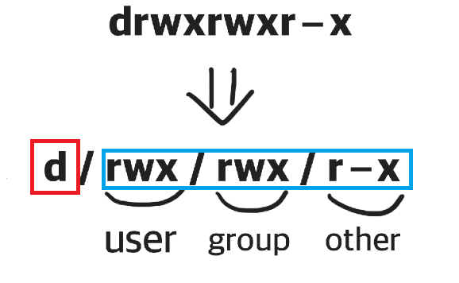

리눅스 계열은 하나의 컴퓨터를 여러 사람이 사용 할 수 있는 멀티유저 운영체제 이기 때문에 각 폴더나 파일에 권한이 있고 이 권한 관리가 매우 중요하다.

빨간색 부분에서 폴더이면 d로 파일이면 -로 나타난다.
파란색 부분에서 r, w, x, -는 접근 권한을 나타낸다.
r : 읽기 권한으로 파일 및 폴더안에 있는 데이터, 속성, 서브 폴더 등에 접근이 가능하다.
w : 쓰기 권한으로 파일 및 폴더의 속성과 데이터를 변경할 수 있다.
x : 실행 권한으로 해당 파일을 실행하여 사용할 수 있다.
- : 권한 없음을 나타낸다.
파란색 부분에서 슬러쉬(/)로 3구간이 나뉘는 이유는 각 구간마다 사용자(user)와 그룹(group), 나머지(other)에 대한 권한을
표시하기 때문이다.
사용자(user) : 파일 및 폴더를 소유하고 있는 유저가 가지는 권한
그룹(group) : 그룹 유저가 가지는 권한
나머지(other) : 다른 유저가 가지는 권한
각 사용자들은 하나 이상의 그룹에 소속되어 있어 사용자와 그룹에 대해서도 알고 있어야 한다.
새로운 사용자 추가
adduser <user_name>
사용자 생성 및 userID 지정
adduser --uid <user_ID> <user_name>
사용자 생성 및 특정 그룹에 포함
adduser --gid <group_ID> <user_name>
사용자 생성 및 홈디렉토리 지정
adduser --home <directory_name> <user_name>
비밀번호 변경
passwd <user_name>
사용자 삭제
userdel <user_name>
사용자 삭제 및 홈디렉토리 삭제
userdel -r <user_name>
소속된 그룹 확인
groups <user_name>
새로운 그룹 생성
groupadd <group_name>
그룹 삭제
groupdel <group_name>
그룹 비밀번호 설정
gpasswd <group_name>
그룹 사용자 설정(옵션은 필요에 따라 찾아서 사용하자)
gpasswd -<option> <user_name> <group_name>
유닉스 계열에서 파일 또는 디렉토리의 권한을 변경하기 위해서 chmod 명령어를 이용해야한다.
chmod 로 권한을 변경하는 방식은 더하기(+), 빼기(-), 할당(=)과 Access Type을 표기해서 변경하는 Symbolic method와 rwx를 3 bit로 해석하여 숫자 3자리로 권한을 표기해서 변경하는 Absolute form방식이 있다.
Symbolic method는 액세스 클래스, 연산자, 액세스 타입으로 구분한다.
| Access class | Operator | Access Type |
| u (user) | + (add access) | r (read) |
| g (group) | - (remove access) | w (write) |
| o (other) | = (set exact access) | x (execute) |
| a (all : u, g, o) |
chmod 명령어 뒤에 액세스 클래스의 u, g, o, a를 변경할 조건에 따라 조합하여 입력하고 연산자와 액세스 타입을 순서대로 입력한다.
아래의 예시 코드는 해당 폴더나 파일의 group과 other의 write와 execute의 권한을 remove 시킨다.
chmod go-wx <file_or_folder_name>
Absolute form은 숫자 7까지 나타내는 3 bits의 합으로 표기한다.
| Permission | Number |
| r (read) | 4 |
| w (write) | 2 |
| x (execute) | 1 |
chmod 명령어 뒤에 원하는 권한의 숫자의 합을 user, group, other 순으로 입력한다.
아래의 예시 코드는 해당 폴더나 파일의 user, group, other의 모든 권한을 추가한다.
chmod 777 <file_or_folder_name>
유닉스 계열에서 파일이나 폴더 또는 하위 경로의 소유자를 변경하기 위해서 chown 명령어를 이용할 수 있다.
chown -<option> <user>:<user_group> <file_or_folder_name>